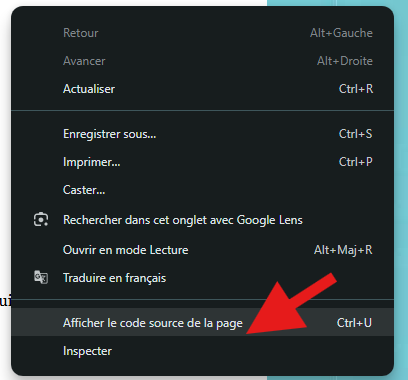
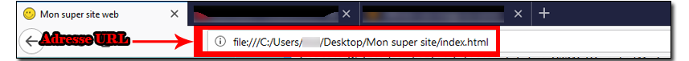
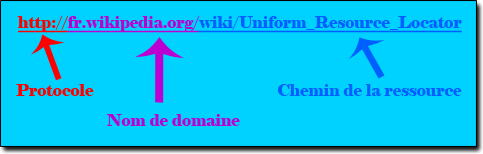
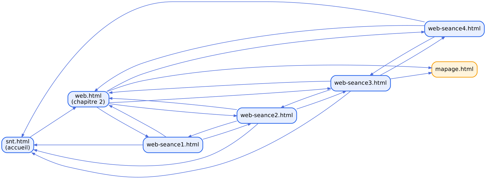
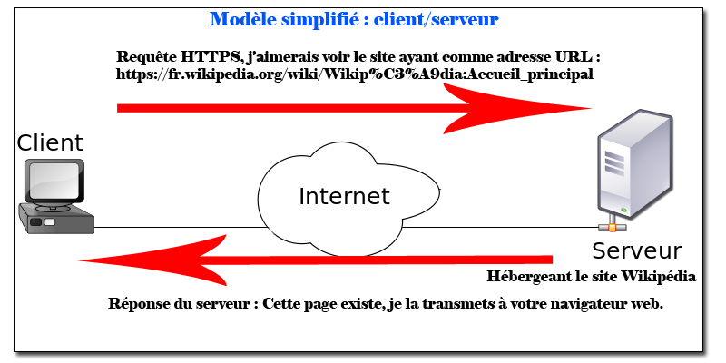

Chapitre 2 – Le Web
Comprendre le Web
Avant de commencer
Une petite vidéo qui explique la différence entre le Web et Internet :
Introduction : normalisation de la présentation de l’information sur le Web
Repères historiques
- 1965invention et programmation du concept d’hypertexte par Ted Nelson ;Définition dans le document 3.
- 1989naissance du Web au CERN par Tim Berners-Lee ;CERN : Organisation européenne pour la recherche nucléaire (à l’origine « Conseil européen pour la recherche nucléaire »), l’un des plus grands laboratoires de recherche en physique au monde, près de Genève en Suisse.
- 1993mise dans le domaine public du Web et disponibilité du premier navigateur grand public, Mosaic ;Voir une capture du navigateur ↗
- 1995mise à disposition de technologies pour le développement de sites web interactifs (langage JavaScript) et dynamiques (langage PHP) ;Ce sont deux langages que nous n’étudierons pas.
- 2001standardisation des pages grâce au DOM (Document Object Model) ;Une manière pour le navigateur de lire et d’afficher les informations d’une page web.
- 2010mise à disposition de technologies pour le développement d’applications sur mobiles.
Doc. 1 Les langages web
Sur le Web, les textes, photos, vidéos, graphiques, sons et programmes sont exprimés et assemblés dans divers formats normalisés par un consortium mondial, le W3C (World Wide Web Consortium), ce qui permet une circulation standardisée de ces informations.
Les pages web sont écrites dans le langage HTML (HyperText Markup Language). Leur style graphique est défini dans le langage CSS (Cascading Style Sheets).
Actuellement, vous êtes sur une page web écrite en langage HTML et CSS. Elle est lisible grâce à un navigateur web.
Vous pouvez observer le code source HTML de cette page web en faisant un clic droit sur la page, puis en cliquant sur « Afficher le code source de la page » (ou avec le raccourci Ctrl + U).

Afin de voir l’action du CSS sur une page web, vous pouvez cliquer ici. La page qui s’ouvre est la même que celle-ci, mais sans CSS.
Voici à quoi ressemble du CSS (extrait du fichier de style de ce site) :
body {
margin: 0;
font-family: system-ui, -apple-system, "Segoe UI", Roboto, Helvetica, Arial, sans-serif;
font-size: 1.05rem;
line-height: 1.65;
color: var(--text);
background: var(--bg);
}
.hero {
background: linear-gradient(135deg, var(--primary), #7c3aed);
color: #fff;
border-radius: var(--radius);
padding: 1.75rem 1.5rem;
box-shadow: var(--shadow);
}Doc. 2 URL et protocole HTTP / HTTPS
Les pages web ont une adresse unique, nommée URL (Uniform Resource Locator). Cette adresse nous est communiquée par la barre d’adresse de notre navigateur web.

file://).Sur Internet, les pages web sont accessibles en utilisant le protocole HTTP (HyperText Transfer Protocol) ou sa version sécurisée HTTPS, qui chiffre les échanges.
HTTPS permet au visiteur de vérifier l’identité du site web auquel il accède, grâce à un certificat d’authentification émis par une autorité tierce réputée fiable (et faisant généralement partie de la liste blanche des navigateurs). Il garantit, en théorie, la confidentialité et l’intégrité des données envoyées par l’utilisateur.
L’affichage des pages est réalisé chez l’utilisateur par un programme appelé navigateur web. Vous connaissez sûrement des navigateurs comme Google Chrome, Safari, Opera, Firefox ou Microsoft Edge.
Ces deux protocoles de communication échangent avec des serveurs web, qui hébergent des pages web sur un réseau, le plus couramment Internet.
Il existe d’autres protocoles de communication :
mailto:prof@likes.org: le protocole mailto permet de se connecter au serveur de messagerie.ftp://ftp.mozilla.org/pub/mozilla.org/firefox/releases/: le protocole ftp (serveur de gestion de fichiers) permet de se connecter à un serveur ftp.
Sur ce site, hébergé sur Internet, l’URL commence par https://. En revanche, lorsqu’on ouvre une page enregistrée sur son ordinateur (comme sur la capture ci-dessus, ou ta page mapage.html en séance 3), le protocole est file:// : il appelle simplement les fichiers disponibles sur l’ordinateur. La page n’est alors pas hébergée sur le web, mais localement : on n’a pas besoin de HTTP ou HTTPS pour y accéder.
Toute adresse URL se décompose comme ceci :

Doc. 3 Lien hypertexte
Un hypertexte est un texte augmenté qui contient comme information une adresse URL. On l’utilise notamment pour créer des liens entre des pages web.
Exemple 1 : Cliquer ici est un lien hypertexte qui vous redirige vers la page web du site du Likès, d’adresse URL http://www.likes.org/.
Exemple 2 : un lien hypertexte avec le protocole mailto, pour communiquer avec l’adresse mail d’URL mailto:prof@likes.org : Contacter : prof@likes.org. Comme le navigateur web ne s’occupe pas du protocole mailto, c’est votre logiciel de messagerie (Outlook, par exemple) qui s’ouvre pour communiquer avec le serveur de messagerie.
Les liens hypertextes sont utilisés pour créer des liens entre des pages web. Par exemple, sur ce site, la barre en haut de la page comporte des liens hypertextes, répétés sur chacune des pages afin de naviguer entre elles… à l’exception d’une page du chapitre.
On peut représenter les liens hypertextes entre les pages par un graphe orienté. La flèche symbolise le lien : elle indique que l’on peut aller de telle page vers telle autre.

Doc. 4 Interaction client / serveur
Le Web s’appuie sur le dialogue entre clients et serveurs. L’interaction est à l’initiative des clients, qui envoient des requêtes HTTP ou HTTPS aux serveurs.

De manière simplifiée, le client est l’utilisateur qui souhaite voir une page web. Le contenu de cette page est stocké sur ce que l’on appelle un serveur web. Le client envoie une requête (une demande) HTTP ou HTTPS pour que la page s’affiche sur son navigateur web.
? Répondre aux questions suivantes
Décomposer l’URL du site : http://www.likes.org/Espace-Numerique
Décomposer l’URL de la vidéo : https://www.youtube.com/watch?v=TeiUyeXjzJ4
Quel est le langage web qui permet d’écrire du contenu sur une page web ?
Quel est le langage web qui permet d’éditer le style graphique d’une page web ?
Quelle est la différence entre le protocole HTTP et le protocole HTTPS ?
Quel est le rôle d’un lien hypertexte sur un site web ?
La barre de navigation en haut de la page comporte des liens hypertextes, répétés sur chacune des pages afin de naviguer entre elles, à l’exception d’une page du chapitre. Laquelle ? Donner son adresse URL.